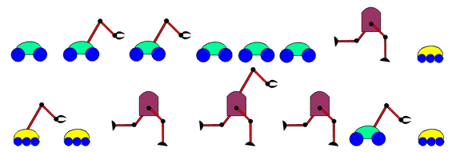

Castor dispose de 15 robots représentés ci-dessous. Ces robots peuvent écouter des ordres et les exécuter.
Castor veut envoyer à son barrage les robots dont il a besoin pour l'aider dans ses réparations. Pour ce faire, il donne les ordres suivants aux robots :
Après cette série d'ordres, combien de robots se retrouvent au barrage ? (saisissez juste le nombre)
Au premier ordre, les robots avec trois petites roues n'obéissent plus, donc ils n'iront jamais au barrage.
Au deuxième ordre, le seul robot qui possède des jambes et un bras va au point de rencontre.
Au troisième ordre, les 3 robots avec des jambes et les 3 robots avec un bras n'obéissent plus, ils n'iront pas au barrage.
Au quatrième ordre, les robots qui obéissent encore vont au barrage.
Au total, on a donc 5 robots qui vont au barrage.
Ici, Castor donne des ordres aux robots. Du point de vue d'un robot particulier, celui-ci reçoit une séquence d'ordres, qu'il doit appliquer tel un programme. Ce programme a la possibilité d'utiliser une commande particulière pour dire "arrêter de prendre en compte tout ce qui est décrit dans le reste du programme jusqu'à ce qu'on recommence tout à zéro". Ce genre de commande est également disponible dans les véritables langages de programmation.